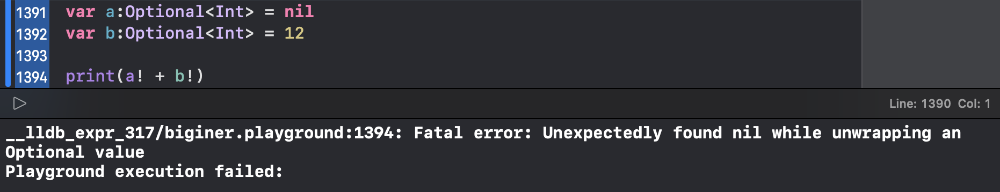
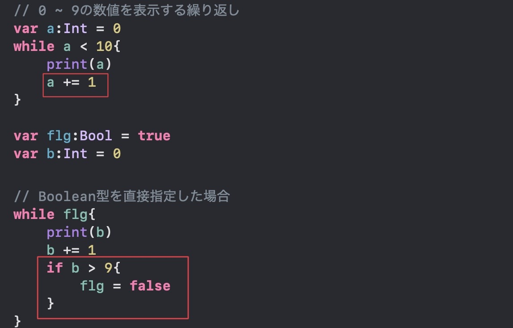
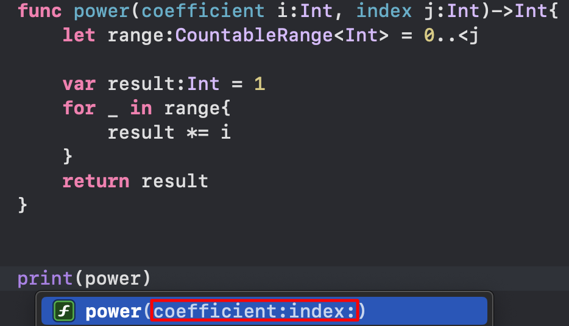
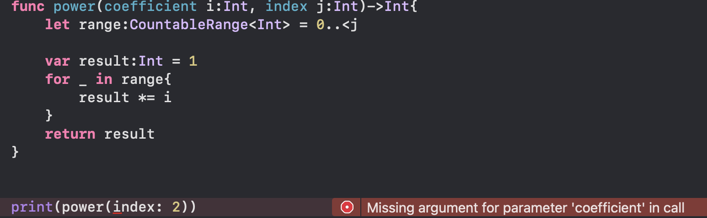
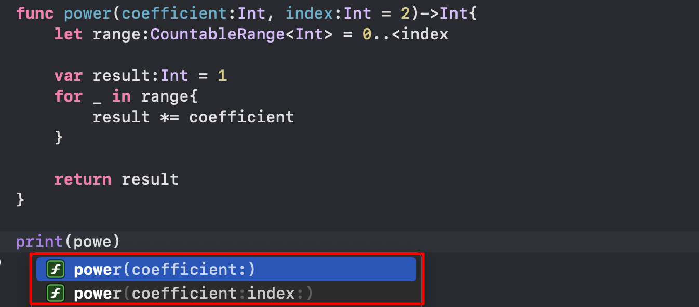

links
変数
変数とは値を保存するための箱のようなもので、変数に値を入れることで
値を再利用できます。
また、Swiftは静的型付け言語のため、
型宣言時に型を指定してあげなくてはいけません。
その変数の型に一致しない値を代入しようとした場合、コンパイルエラーとなってしまいます。
一方で変数に静的な型は存在せず、代入された値によってその変数の型が決まる言語のことを
動的型付け言語といい、代表的なものではPythonが挙げられます。
// var 変数名:型 = 値
var num:Int = 10
また、変数や定数の宣言時に型を宣言しなくても、型推論
という機能によって自動的に型が振り分けられます。
しかし、型推論を利用するためには、変数宣言時に値を代入している必要があります。
ここでは、Int型の変数numを宣言しています。
型については後で触れています。
その他の変数同士の演算や、代入、などは割愛します。
定数
定数とはほとんど変数と同じ機能を持っています。 唯一違う点は、再代入できない という違いです。一度値を持たされた定数に再度値を代入するとコンパイルエラーとなってしまいます。
具体的な宣言方法
// let 定数名:型名 = 値
let num:Int = 12
ここでこの定数numに値を再代入すると...

コンパイルエラーとなってしまいます。
基本的な型
Swiftが取り扱う基本的な型は以下の通りです。
| 型名 | 概要 |
|---|---|
| Int | 整数値を扱う |
| String | 文字列を扱う |
| Double | 64ビット浮動小数値を扱う |
| Float | 32ビット浮動小数値を扱う |
| Boolean | 真偽値を扱う |
| Any | 全ての値を扱う |
| Void | 値が何も存在しない状態を扱う |
概要に書いてあるとおり、それぞれで扱うことのできる値が変わってきます。 またそれぞれの型にOptional型というものがあり、詳しくは次のセクションで 解説しています。
その値が何の型なのかを調べるときには
print(type(of: 任意の値))
を実行することで、その値の型を調べることができます。
結果↓
Optional型
Optional型とは何も値が入っていない状態(nil値)を許容する型です。 通常の型にnil値を入れるとコンパイルエラーとなってしまうため、 nil値が入ると思われるところに使用します。
Optional型として変数・定数を宣言する場合は Optinal<型名>もしくは型名?とすることで宣言できます。
具体的な宣言方法
var optionalNum:Optional<Int> = 12
let optionalStr:String? = nil
ただしOptional型はnil値を許容しているため、演算をすることができません。 そこで、演算を行うためにはOptional型から値を取り出すアンラップ を行う必要があります。
アンラップの方法には以下の3つがあります。
- if-let文を使ったアンラップ
- ??演算子を使ったアンラップ
- 強制アンラップ
if-let文を使ったアンラップ
if-let分を使用することでOptional型をアンラップすることができます。
文法
let opInt:Optional<Int> = 12
// if let 変数名 = Optional型の変数
if let int = opInt{
// アンラップ成功時に実行したい処理
}
ここでアンラップした先の変数intのスコープはif-let文内となるため、文の外では利用できません。
(スコープとはその変数にアクセスできる範囲のこと)
また、通常のif文と同じく、文末にelseを追加することで、アンラップに失敗したときの処理を 追加することができます。
let opStr:Optional<String> = nil
if let str = opStr{
// アンラップ成功時の処理
}else{
// アンラップ失敗時の処理
}
??演算子を使ったアンラップ
アンラップ先の変数・定数宣言時に??演算子を用いることでアンラップを行うことができます。
文法
var opInt:Optional<Int> = 12
// var 変数名:型名 Optional型の変数 ?? アンラップしたい型の具体的な値
var int:Int = opInt ?? 0
print(int) // 12
opInt = nil
int = opInt ?? 100
print(int) //100
??演算子を使ったアンラップは、Optional型の値がnil値でない場合は アンラップされた値が代入され、nil値の場合は??演算子のうしろについている 具体的な値が代入されます。これにより、代入先にnil値が入らないことを 保証しています。
強制アンラップ
強制アンラップとは、Optioanl型にnil値が入っている状態を考えず、すぐに
アンラップを行う手法です。
強制アンラップはOptional型の変数の後ろに「!」をつけることで行えます。
var a:Optional<Int> = 12
var b:Optional<Int> = 2
print(a! + b!) //14
このように、Optional型の変数から直接値を取り出せます。しかし この方法はOptional型の変数がnil値だった場合エラーとなる危険性があるので、使う場面をより慎重に考え、 適切に使用しなければなりません。乱用は避けましょう。
nil値が入っているときに、強制アンラップを行った場合
型のキャスト
キャストとは現在の型を別の型として扱う手法のことを言い、 アップキャストと ダウンキャストの二つがあります。
アップキャスト
アップキャストとは階層関係にある具体的な値を、上位の抽象的な値に変換することを言います。 キャストには「as」を使用します。
文法
var str:String = "aaa" // 具体的な型(String)
var any:Any = str as Any // 上位の抽象的な型(Any)
ダウンキャスト
もう一つのダウンキャストは、アップキャストとは反対に上位の抽象的な 型を下位の具体的な型に変換することを言います。また、ダウンキャストされた値は オプショナル型となります。キャストには「as?」「as!」を使用します。 しかし、「as!」はダウンキャストと同時に強制アンラップを行うため、 キャスト元にnil値が入っているとエラーとなります。扱いには注意が必要です。
文法
var any:Any = 12 // 抽象的な型
var opInt:Int? = any as? Int? // Optinal(12)
any = nil
opInt = any as? Int? //nil
var int:Int = any as! Int // キャストもとにnil値が入っているのでエラー
配列
配列とは、変数の寄せ集めのような構造のデータです。 使用方法はPythonやほかの言語と大差ないが、宣言方法が独特であります。 for文と組み合わせて使用することもできます。 Optional型として宣言することも可能です。
具体的な宣言方法
// var 変数名:Array<任意の型名> = [値, 値, 値.....]
var numArray:Array<Int> = [1, 2, 3, 4, 5, 6]
print(numArray[2]) // 3
他にも「追加」「挿入」「結合」「削除」が可能です。
追加
配列.append(値)で指定した配列に値を追加することができます。
文法
// 配列.append(値)
var opStrArray:Array<String?> = ["A", "B", "C", "E"]
opStrArray.append(nil) // ["A", "B", "C", "E", nil]
挿入
配列.insert(値, at:インデックス)で、指定した配列の指定したインデックスに値を追加することができます。
文法
// 配列.insert(値, at:インデックス)
var anyArray:Array<Any> = [1, "aa", 1.5, True]
anyArray.insert(2, at:1) // [1, 2, "aa", 1.5, True]
結合
配列 + 配列とすることで配列同士を結合することができます。感覚的には文字列結合に近いです。
※型は統一されていないとエラーとなってしまいます。
// 配列 + 配列
var array1 = [1, 2, 3, 4]
var array2 = [6, 7, 8, 9]
var array3 = array1 + array2
print(arrray3) // [1, 2, 3, 4, 6, 7, 8, 9]
削除
配列.remove(at:インデックス)とすることで指定した配列の指定したインデックスの値を削除することができます。
文法
// 配列.remove(at:インデックス)
var opIntArray: Array<Optional<Int>> = [1, 2, nil, 4]
opIntArray.remove(at: 2) // [1, 2, 4]
また、配列の中のすべての要素を削除したい場合は配列.removeAll()と することで、インデックスを指定せずにすべての要素を削除することができます。
文法
// 配列.removeAll()
var array:Array<Int?> = [1, 3, 4, nil, 5]
array.removeAll() // []
タプル
タプルとは配列のように複数の値を一つの変数、または定数で 扱えるようにしたものです。また、配列と違い、複数の型を 一つのまとまりとして扱うことができます。しかし、一方で 値の追加や削除、繰り返しの処理はできません。
具体的な宣言方法
// var 変数名: (型名, 型名, 型名....) = (値, 値, 値.....)
var tuple: (Int, String) = (1, "A")
基本は上のように宣言しますが、宣言の方法を変えることで、 値にラベルをつけることができます。
宣言方法
// var 変数名: (ラベル名:型名, ラベル名:型名, ラベル名:型名....) = (値, 値, 値.....)
var tuple: (number:Int, Name:String) = (1, "A")
タプルのメリットは、複数の型を同時に扱えるところにあります。 後に紹介する関数で、一度に複数の値を返り値として戻したいとき などに重宝されます。 また、値のアクセスには「変数名.要素番号」を使用します。要素番号は 配列と同じく「0」から始まります。さらに、 ラベル付きだった場合は「変数名.ラベル」とすることでアクセスすることが できます。
文法
var tuple: (Int, String) = (1, "A")
var labelTuple:(number:Int, name:String) = (2, "B")
// 変数名.要素番号
print(tuple.1) // A
// 変数名.ラベル
print(labelTuple.number) // 2
値の更新は「変数名.要素番号 = 新しい値」とすることで更新できます。 また、ラベル付きの場合は要素番号の代わりにラベルを指定しても更新できます。
文法
var tuple: (Int, String) = (1, "A")
var labelTuple:(number:Int, name:String) = (2, "B")
tuple.1 = "AA"
print(tuple) // (1, "AA")
labelTuple.number = 200
print(labelTuple) // (number: 200, name: "B")
辞書
辞書とは、キーとそのキーに対応した値を集めたデータのことを言います。
具体的な宣言方法
// var 変数名:Dictionaly<キーの型, 値の型> = [キー:値, キー:値, キー:値...]
var dict:Dictionaly<Int, String> = [1 : "佐藤", 2 : "鈴木", 3 : "田中"]
辞書のキーを指定することで、それに対応した値を取り出すことができます。 この取り出した値は、Optional型となって返ってきます。また、存在しない キーを指定した場合は、nil値が返ってきます。Optional型である理由は ここにあるのかもしれないです。
// 辞書名[キー]
var dict:Dictionaly<Int, String> = [1 : "佐藤", 2 : "鈴木", 3 : "田中"]
var opName:Optional<String>
opName = dict[2] // Optional("鈴木")
opName = dict[9] // nil
また、辞書にも「追加」「更新」「削除」の機能があります。
追加
値を追加したい場合は存在しないキーに値を代入します。
文法
// 辞書名[存在しないキー] = 追加したい値
var dict:Dictionaly<Int, String> = [1 : "佐藤", 2 : "鈴木", 3 : "田中"]
dict[4] = "高橋"
print(dict) // [1 : "佐藤", 2 : "鈴木", 3 : "田中", 4 : "高橋"]
更新
値を更新したい場合は更新したい値に対応したキーを指定して、そこに 代入を行います。
文法
// 辞書[更新したい値のキー] = 値
var dict:Dictionaly<Int, String> = [1 : "佐藤", 2 : "鈴木", 3 : "田中"]
dict[2] = "渡辺"
print(dict) // [1 : "佐藤", 2 : "渡辺", 3 : "田中"]
削除
辞書の値を削除したいときは、削除したい値に対応したキーを指定して、そこに nil値を代入することで、キーごと辞書から削除することができます。
文法
// 辞書[削除したい値のキー] = nil
var dict = [1 : "佐藤", 2 : "鈴木", 3 : "田中"]
dict[2] = nil
print(dict) // [1 : "佐藤", 3 : "田中"]
また、配列と同様に、すべての値を削除したい場合は辞書.removeAll() とすることで、すべてのキーと値を削除することができます。
文法
// 辞書.removeAll()
var dict = [1 : "佐藤", 2 : "鈴木", 3 : "田中"]
dict.removeAll()
print(dict) // [:]
範囲
範囲型とはその名の通り一定の範囲を表すことのできる型です。 用途としては、ある数値がその範囲内に存在するかを調べたり、 for文とあわせて使ったりします。 また、範囲型にはさまざまな範囲を表す型があるので、覚えるのが 大変でした。以下が範囲型の一覧です。
- Range
- CountableRange
- ClosedRange
- CountableClosedRange
- PartialRangeFrom
- CountablePartialRangeFrom
- PartialRangeUpto
- PartialRangeThrough
Range
Range型は以上~未満の範囲を表します。型には「Int」 「Double」「Float」が指定できます。 また、型にIntを指定した場合、勝手にCountableRange となります。 Range型はカウント不可なので、for文と組み合わせて使用することga できません。
具体的な宣言方法
// var 変数名:Range<型名> = 始まりの数値..<終わりの数値
var range:Range<Double> = 1.2..<5.5 // 1.2 ~ 5.49999999...までの範囲を表す
CountableRange
CountableRange型は名前にもある通り、カウントできるRange型です。 指定できる型は、先ほども記述したように、Int型のみとなってます。 カウント可能なので、for文と組み合わせて使用することができます。
具体的な宣言方法
// var 変数名:CountableRange<Int> = 始まりの数値..<終わりの数値
var range:CountableRange<Int> = 0..<10 // 0 ~ 9までの範囲を表す
ClosedRange
CountableRange型は以上~その数値までの範囲を表します。 型には「Int」「Double」「Float」が指定できます。 また、型にIntを指定した場合、勝手にCountableClosedRange となります。 ClosedRange型はカウント不可なので、for文と組み合わせて使用することはできません。
具体的な宣言方法
// var 変数名:ClosedRange<型名> = 始まりの数値...終わりの数値
var range:ClosedRange<Float> = 1.0...4.9 // 1.0 ~ 4.9までの範囲を表す
CountableClosedRange
CountableClosedRange型はClosedRange型のカウント可能版の型です。 カウント可能なので、for文と組み合わせて使用することができます。 また、指定できる型はInt型のみです。
具体的な宣言方法
// let 定数名:CountableClosedRange<Int> = 始まりの数値...終わりの数値
let range:CountableClosedRange<Int> = 0...10 //0 ~ 10までの範囲を表す
PartialRangeFrom
PartialRangeFrom型はその数値以上の範囲を表します。 型には「Int」「Double」「Float」が指定できます。 また、型にIntを指定した場合、勝手にCountablePartialRangeFrom となります。 PartialRangeFrom型はカウント不可なので、for文と組み合わせて 使用することはできません。
具体的な宣言方法
// var 変数名:PartialRangeFrom<型名> = 始まりの値...
var range:PartialRangeFrom<Double> = 0.2... // 0.2以上の範囲を表す
CountablePartialRangeFrom
CountablePartialRangeFrom型はPartialRangeFrom型の カウント可能版です。カウントが可能なのでfor文と組み合わせて使用できますが、 終わりの境界が存在しないため、無限ループとなります。 また、指定できる型はInt型のみです。
具体的な宣言方法
// let 定数名:CountablePartialRangeFrom<Int> = 始まりの数値...
let range:CountablePartialRangeFrom<Int> = 100... // 100以上の範囲を表します
PartialRangeUpto
PartialRangeUpto型はその数値未満の範囲を表します。 型には「Int」「Double」「Float」が指定できます。 また、この型はカウント不可なのでfor文と組み合わせて使用することができません。
具体的な宣言方法
// var 変数名:PartialRangeUpto<型名> = ..<終わりの数値
var range:PartialRangeUpto<Int> = ..<10 // 9.999999999..までの範囲を表す
PartialRangeThrough
PartialRangeThrough型はその数値以下の範囲を表します。 型には「Int」「Double」「Float」が指定できます。 また、この型はカウント不可なのでfor文と組み合わせて使用することができません。
具体的な宣言方法
// let 定数名:PartialRangeThrough<型名> = ...終わりの数値
let range:PartialRangeThrough<Double> = ...102.7 // 102.7までの範囲を表す
if文
if文とは分岐を扱うための制御構文です。 処理の内容は他の言語と大きな違いはないので、 すんなり入ってきました。Pythonとの違いを言えば 「:」ではなく「{}」で領域を決めるということです。 Javaと似ています。
文法
// if 条件式 {
// 条件成立時に実行したい処理
// }
var num:Int = 12
if num > 10{
print("numは10より大きい数です。") // 実行される
}
if num < 10{
print("numは10より小さい数です。") // 実行されない
}
if文の後ろに記述する条件式は、実行時にtrueまたはfalseの値に変化します。 そのため、ifの後ろに条件式ではなく、直接Boolean型の値を記述してもif文は 成立します。
文法
// if Boolean型{
// true時に実行したい処理
// }else{
// false時に実行したい処理
// }
if true{
print("trueが入力されました") // 実行される
}else{
print("falseが入力されました") // 実行されない
}
let flg: Boolean = false
if flg{
print("trueが入力されました") // 実行されない
}else{
rint("falseが入力されました") // 実行される
}
for文
for文とは繰り返しを行うための制御構文で、 配列や辞書、範囲とよく組み合わせて使用されます。 また、範囲型を使用する場合はカウント可能 な型でないといけません。
文法
let range:CountableRange<Int> = 0..<5 // 範囲型
let array:Array<String> = ["あいうえお", "かきくけこ", "さしすせそ"]
var dict:Dictionary = [1:"田中", 2:"高橋", 3:"佐藤", 4:"鈴木"]
// 範囲型の場合
for i in range{
print(i) // 0 ~ 4までの数値が出力される
}
// 配列の場合
for s in array{
print(s)
// あいうえお
// かきくけこ
// さしすせそ
// 要素を一つづつ取り出すことができる
}
// 辞書の場合
for data in dict{
print(i)
// (key: 2, value: "高橋")
// (key: 3, value: "佐藤")
// (key: 4, value: "鈴木")
// (key: 1, value: "田中")
}
for (key, value) in dict{
print("key: \(key), value: \(value)")
// key: 2, value: 高橋
// key: 1, value: 田中
// key: 4, value: 鈴木
// key: 3, value: 佐藤
}
このようにfor文に渡す型の違いによっておおきく 挙動が変わります。特に個人的に辞書をfor文に渡したときの 挙動がいちばん掴みにくいなと思いました。 辞書を変数が一つのfor文に渡した場合、(key:型, value:型)の タプル型が取得できます。また、得られたタプルは 順番通りに並んでない場合があります。
while文
繰り返しを扱う文は上で記述したfor文ともう一つwhile文と いうものがあります。while文はfor文とちがい、直後に 条件式を記述し、条件がtrueの場合繰り返しが実行されるといった ものです。また、直接Bool型の値を指定することで繰り返しを行うこともできます。
文法
var a:Int = 0
// 0 ~ 9までの数値を表示する繰り返し
while a < 10{
print(a)
a += 1
}
var flg:Boolean = true
var b:Int = 0
// Bool型を直接指定した場合
while flg{
print(b)
b += 1
if b > 9{
flg = false
}
}
また、while文とfor文の大きな違いとして、無限ループの危険性が while文にはあるといったことが挙げられます。無限ループとは while文の条件が常にtrueとなることで、繰り返しから抜け出せなくなること をいいます。無限ループに陥ると処理が滞り、また、膨大な計算量となってしまう ため、クラッシュの原因になります。そのため、while文には条件に使用する 値を変化させなければなりません。
上の画像のように値を変化させるプログラムを用意し、 条件がいずれfalseになるようにすることで 無限ループを防ぐことができます。
さらに、ループを途中で終了させたり、飛ばして処理を行いたい場合は breakやcontinueを使用することで、実現できます。
break
break文は繰り返しの途中で繰り返しを終了させるものです。 break文が実行された後の繰り返しのプログラムは実行されず、 繰り返しの外に出ます。
var a:Int = 0
while a < 10{
if a == 5{
break
}
print(a)
a += 1
}
print("繰り返し終了")
上のプログラムは本来、0 ~ 9までの数値を表示するプログラムですが、 break文を付け足すことで、4が表示されると次は"繰り返し終了"と 表示されます。このようにbreak文は実行された時点で、繰り返しを終了し 次の処理へと進みます。
continue
continue文は繰り返しの処理を飛ばして再度最初から繰り返し処理を行う ものです。文章で見ると意味が捉えにくいので、プログラムで見てみましょう。
var a:Int = 0
while a < 10{
if a % 2 == 1{
a += 1
continue
}
print(a)
a += 1
}
このプログラムの実行結果は「0, 2, 4, 6, 8」というような結果になります。 これはa÷2の余りが1の時にcontinueが実行されているからです。 このようにcontinueが実行された時点で、それ以下にある繰り返し内の処理は すっ飛ばされ、繰り返しの先頭から、再度処理が行われます。
また、for文やwhileにラベルをつけることで、breakやcontinueを 実行する相手を指定することができます。 ラベルとはそのブロックを表す名前のようなものです。
// ラベル: for
// または
// ラベル: while
// ラベルなし
for i in [0, 1, 2]{
for j in [0, 1, 2]{
print("i:\(i), j:\(j)")
break
// 結果
// i:0, j:0
// i:1, j:0
// i:2, j:0
}
}
// ラベルあり
label1: for i in [0, 1, 2]{
for j in [0, 1, 2]{
print("i:\(i), j:\(j)")
break label1
// 結果
// i:0, j:0
}
}
上のプログラムの実行結果からもわかるように、breakで何も指定しない場合は 直前の繰り返しから抜け出せないのに対し、ラベルを指定することで、 任意の繰り返しから抜け出すことができるようになります。
関数
関数とは、一つの処理をまとまりとして管理する方法です。 これを使用することで、似たような処理を一箇所で管理することが できるようになるため、修正やコードを記述する時間を短縮することが できます。今までに使用してきた「print()」や「type()」なども 関数の一つです。関数に渡す処理に必要な値を「引数」,関数で処理を行った 結果の値を「戻り値」と言います。関数を使用する場合は「関数名(引数)」 とすることで使用することができます。
文法
// func 関数名(引数名: 型, 引数名: 型,...) -> 戻り値の型{
// ここに行いたい処理を記述する
// return 戻り値
//}
// 渡された値(引数)に10を足して返す関数
func addTen(num: Int) -> Int{
let resultNum = num + 10
return resultNum
}
let result = addTen(num: 5)
print(result) // 15
上のプログラムでは、一つしか引数はありませんが、複数の引数を用意することもできます。
文法
// 引数が複数だった場合
// 引数1の引数2乗する関数
func power(num1:Int, num2:Int)->Int{
var powNum:Int = 1
for _ in 0..<num2{
powNum *= num1
}
return powNum
}
print(power(num1:2, num2:10)) // 1024
このように、宣言時に引数を複数用意してあげれば、関数に複数の値を渡すことができます。 ここで、プログラマにとってとてもめんどくさいことがあります。それは、関数呼出時の 引数名の記述です。 今のプログラムでは引数の数だけ「関数名(引数名:値, 引数名:値, 引数名:値...)」といったように引数名を記述する 必要があります。とてもめんどくさいです。それを解決する方法が、引数名の省略です。 省略する方法は以下の通りです。
文法
// 引数名の省略
// 関数名(_ 関数内で使用する変数名:型)
func double(_ num:Int)->Int{
return num * 2
}
print(double(8)) // 16
このように関数内で使用する変数名の前に「_」を記述することで、引数名の省略を 行うことができます。また、「_」の代わりに任意の変数名を記述することで、引数名と 関数内で使用する変数名を意図して分けることができます。
// 「_」の代わりに変数名を記述した場合
// (引数名 関数内で使用する変数名:型)
func power(coefficient i:Int, index j:Int)->Int{
let range:CountableRange<Int> = 0..<j
var result:Int = 1
for _ in range{
result *= i
}
return result
}
print(power(coefficient: 10, index: 2)) // 100
このようにすることで、引数名と関数内の変数名を区別することができます。 また、関数使用時の予測には、先に記述した引数名が表示されます。
引数のデフォルト値
今までに記述してきたプログラムは、引数に必ず値を渡さなければエラーとなってしまいます。 また、特に変化しない値を引数で管理する場合もあります。
※引数を渡し忘れていた場合のエラー
これらを解決するために引数には、 デフォルト値というものが 存在します。
文法
// 関数名(引数名:型 = デフォルト値)
func power(coefficient:Int, index:Int = 2)->Int{
let range = 0..<index
var result:Int = 1
for _ in range{
result *= coefficient
}
return result
}
print(power(coefficient: 4)) // 16
print(power(coefficient: 2, index: 10)) // 1024
上のプログラムでは累乗の指数とする引数「index」にデフォルト値の「2」 を設定しています。そのため、最初の呼び出しでは、引数が「coefficient」のみの 場合でもエラーとならず実行することができます。 また、呼び出し時に、デフォルト値が設定されている引数に、新たな引数を渡すことで 引数を上書きすることができます。 さらに、デフォルト値を設定することで、関数の候補には、デフォルト値の引数を再定義する場合と 再定義しない場合の候補が挙げられます。
候補例
